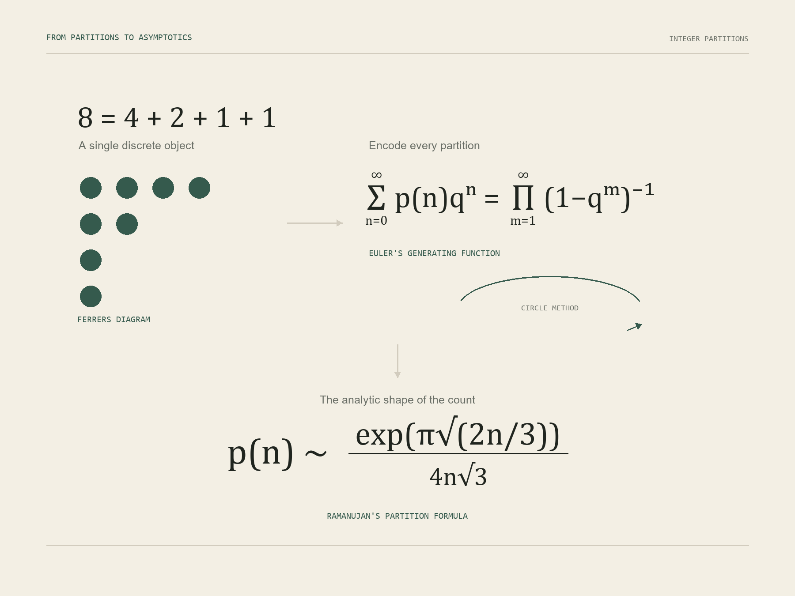

01 · Encode
Generating function
Euler's infinite product stores every value of p(n) as a coefficient of one analytic function.
Pioneer Academics · Expository mathematics
An expository paper that reconstructs D. J. Newman's proof of the Hardy-Ramanujan asymptotic for the partition function, expanding its analytic steps for motivated high-school readers.

Introduction
An integer partition writes a positive integer as an unordered sum of positive integers. The definition is elementary, yet the number of partitions grows with remarkable speed. Euler encoded the entire sequence in an infinite product, opening a route from combinatorics into complex analysis and number theory.
In 1918, Hardy and Ramanujan found a celebrated asymptotic formula for the partition function p(n). Its importance extends beyond numerical approximation: it is an early demonstration of how analytic structure can reveal the behavior of a discrete counting problem.
Expository purpose
Newman's proof is elegant and concise, but many estimates and transitions are left implicit. This paper reconstructs those intermediate arguments, introduces the required tools when they first appear, and explains the role each one plays.
The exposition is written for readers who have encountered basic calculus and complex numbers. Definitions, remarks, and step-by-step estimates are included so that a motivated high-school reader can follow the architecture of the proof without treating its advanced techniques as a black box.
Proof architecture
01 · Encode
Euler's infinite product stores every value of p(n) as a coefficient of one analytic function.
02 · Extract
Cauchy's coefficient formula turns the desired coefficient into an integral around a contour.
03 · Estimate
The contour is separated into regions, isolating the neighborhood that controls the asymptotic growth.
04 · Evaluate
Gaussian integration, Stirling's approximation, and dominated convergence lead to Ramanujan's formula.
Significance
The argument shows that an elementary combinatorial object can be governed by complex-analytic behavior. The same perspective later supports refinements such as Rademacher's convergent expansion and connects partition theory with restricted partitions, q-series, and modular forms.
The appendix compares exact values of p(n) with Ramanujan's estimate for n up to 50 and 500, making the improving numerical accuracy visible alongside the proof.
Full paper
The complete 27-page paper develops the necessary preliminaries, reconstructs Newman's argument, discusses later refinements, and includes numerical comparisons in the appendix.